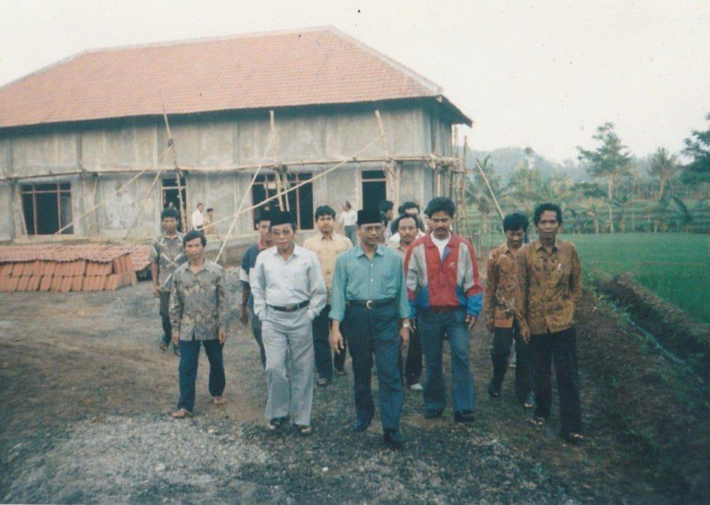

Galeri Kegiatan


MTA Mojogedang 3 adalah lembaga keagamaan yang berdedikasi untuk menyebarkan ilmu agama dan membina masyarakat di Gentungan, Mojogedang, Karanganyar. Didirikan dengan visi untuk menciptakan komunitas yang berakhlak mulia, kami menyelenggarakan kajian rutin, pendidikan Al-Qur’an, dan kegiatan sosial. Misi kami adalah memberikan pendidikan agama yang berkualitas dan mendukung perkembangan spiritual masyarakat.
Ketua
Sekretaris
Bendahara
Peserta Kajian
Santri TPQ
Jadwal: Setiap Selasa, 14:30 WIB
Deskripsi: Kajian tentang dasar-dasar aqidah Islam untuk memperkuat keimanan.
Jadwal: Setiap Kamis, 14:30 WIB
Deskripsi: Pembahasan fiqih ibadah sehari-hari, seperti shalat dan puasa.
Jadwal: Setiap Sabtu, 15:00 WIB
Deskripsi: Kajian untuk membentuk akhlak mulia berdasarkan Al-Qur’an dan Sunnah.
Jadwal: Setiap Ahad, 15:00 WIB
Deskripsi: Penjelasan ayat-ayat Al-Qur’an secara mendalam.
TPQ MTA Mojogedang 3 Karanganyar menyediakan pendidikan Al-Qur’an untuk anak-anak usia 5-12 tahun. Program kami meliputi belajar membaca Al-Qur’an dengan tajwid, hafalan surat pendek, dan pengenalan dasar-dasar agama. TPQ diadakan setiap hari Sabtu dan Minggu pukul 15:00-17:00 WIB dengan pengajar yang berpengalaman.